- Módulo: Sistemas Operativos
- Título del trabajo Clientes de Dominio
- Componentes del grupo: Iván José Hernández Regalado
- Curso Académico: 2013/2014
- Fecha de entrega: 27 de Mayo de 2014
- Tenemos que tener una ip diferente en el cliente que en el servidor de dominio para evitar problemas y
añadimos nuestro servidor en el fichero de "/etc/network/interfaces".
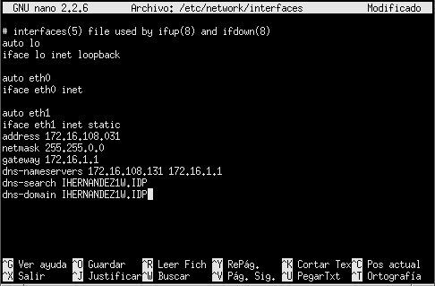
- También se puede añadir nuestro servidor mediante el fichero "/etc/resolv.conf"
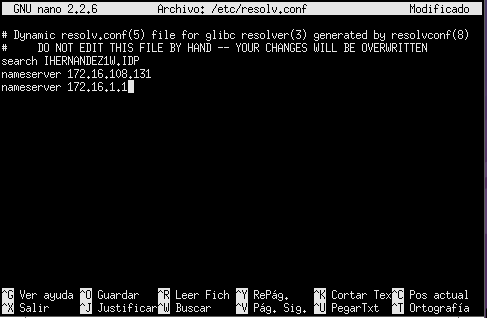
- Podemos comprobar si el dns y la ip esta correctamente con el siguiente comando y con un ping.
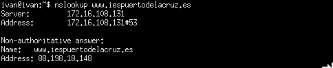
- Además añadimos repositorios por si el sistema no encuentra el likewise con los repositorios por defecto, dependiendo de nuestra versión de
ubuntu.
- Para empezar abrimos una terminar y descargamos los siguientes paquetes: "likewise-open" y "likewise-open-gui"
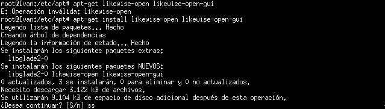
- Si no encontramos de manera gráfica el programa likewise lo podemos ejecutar desde la terminal con el comando "domainjoin-gui"
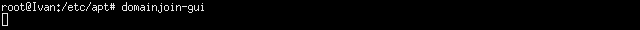
- Luego se nos abrirá una ventana y tendremos que poner el nombre de dominio de nuestro servidor, luego el usuario administrador del
dominio y su clave y si está todo correcto se unirá al dominio.
la MV se nos unirá al dominio.
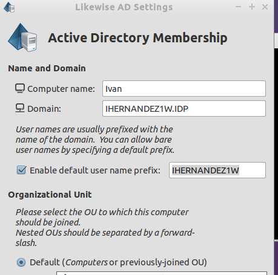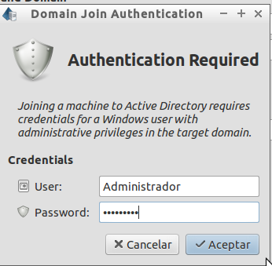
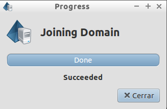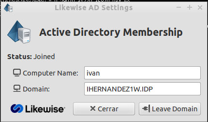
- Tras completar los pasos anteriores ahora podemos cerrar seción y entrar con un usuario del dominio.
- Ejecutamos los siguientes comando para saber que este usuario no está creado en el sistema sino que es un usuario de un dominio, ya que,
el cat está vacío si el cat no está vacío significa que el usuario está creado en el sistema.
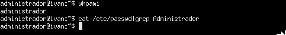
- Para finalizar podemos ir a la máquina del dominio y comprobar que en el Active Directory está añadido un nuevo ordenador.
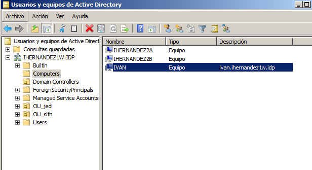